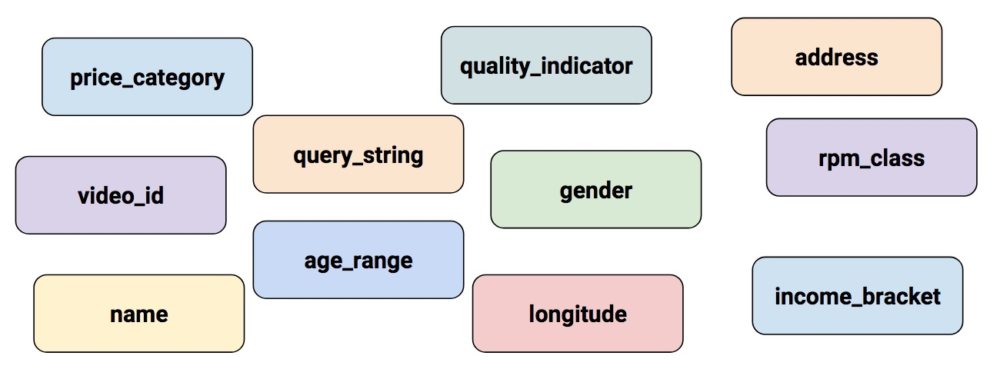

feature columns
目录
原文: https://www.tensorflow.org/guide/feature_columns
feature columns 可以看作是原始特征与 Estimator 模型之间的桥梁,主要支持多种特征工程,从而快速简单的将多种原始数据变换成模型可以直接使用的特征.
数学模型只能接受数值作为特征,所以字符串等种类数据也常常需要编码成独热向量,模型才能进行优化和学习.真实数据中有各种各样的数据:

真实世界中数据种类(例如:经纬度)有一些是数值类,单也有不是数值类的数据.
一句话, feature columns 主要用来将真实数据中的数据转为模型可以使用的类型.
Input to a Deep Neural Network
那么哪种类型的数据是深度神经网络可以学习的呢?答案是数值类(例如: tf.float32).因为神经网络中的神经元只是简单的执行数值间的元算.真实数据常常包含非数值类数据(categorical).例如: product_class 特征就可以是包含如下三个非数值类的数据:
- kitchenware
- electronics
- sports
机器学习模型常规做法是将非数值类数据进行独热编码(向量,其中某位为 1,代表该值出现;0,表示不出现).例如:如果 product_class 为 sports 时,那么一般 product_class 表示为[0,0,1]:
- 第一位 0: kitchenware 缺失
- 第二位 0: electronics 缺失
- 第三位 1: sports 出现
可以看到虽然真实数据可以是数值类和非数值类,但是机器学习模型只能采用数值类特征.
Feature Columns
如下图所示:Estimator 通过 feature_columns 参数来将输入的数据进行特征工程,转换成模型可以使用的数值类型.

图2 feature columns 用来将输入的原始数据转换到模型可以使用的特征类型
tf.feature_column 模块中包含 9 个用来创建 feature columns 的函数.下图显示了 9 个函数除了 bucketized_column, 其余函数返回的对象为:Categorical-Columns 或者 Dense-Columns.

图3 feature column 构建方法返回的对象为 categorical 和 dense,还有一个返回两种集合.
Numeric column
Iris 分类器采用 tf.feature_column.numeric_column 函数来创建所有的特征列:
- SepalLength
- SepalWidth
- PetalLength
- PetalWidth
tf.numeric_column 函数提供了其他可选参数, 但是采用如下的调用方式只需要指定数值特征的名称即可,默认采用 tf.float32 作为特征数值类型:
# Defaults to a tf.float32 scalar. numeric_feature_column = tf.feature_column.numeric_column(key="SepalLength")
通过 dtype 传入对应的数据类型参数指定特征数值类型:
# Represent a tf.float64 scalar. numeric_feature_column = tf.feature_column.numeric_column(key="SepalLength", dtype=tf.float64)
默认的数值特征列创建的是标量值(scalar).可以通过 shape 参数传入特征维度:
# Represent a 10-element vector in which each cell contains a tf.float32. vector_feature_column = tf.feature_column.numeric_column(key="Bowling", shape=10) # Represent a 10x5 matrix in which each cell contains a tf.float32. matrix_feature_column = tf.feature_column.numeric_column(key="MyMatrix", shape=[10,5])
Bucketized column
有时候,尤其是面对浮点型数据数值时,不希望直接将数值数据喂给模型,而是将数值划分到不同的值域区间内,从而实现值域内的数据作为同一个特征值喂给模型. tf.feature_column.bucketized_column 可以实现划分逻辑.例如:如果原始特征代表房屋年龄,不希望直接使用该数值作为特征值,而是可以根据如下阈值区间划分:
图4 将房屋年龄划分到不同区间
feature column 会根据不同的输入输出向量:
| Date Range | Represented as… |
|---|---|
| < 1960 | [1, 0, 0, 0] |
| >= 1960 but < 1980 | [0, 1, 0, 0] |
| >= 1980 but < 2000 | [0, 0, 1, 0] |
| >= 2000 | [0, 0, 0, 1] |
为什么需要将已经适合模型学习的数值特征通过区间划分为类目特征?主要原因是通过区间划分,单独数值特征变成具有 4 个元素的类目特征向量.从而模型可以学习到 4 个独立的权值;4 个权值模型表征能力要强于 1 个权值.更重要的是,由于类目特征是独热编码,所以可以更具输入的数据选取一个单独的权值进行学习和预测,也就是说这样可以认为模型扩展成了 4 个线性模型.
如下代码说明了如何创建类目特征:
# First, convert the raw input to a numeric column. numeric_feature_column = tf.feature_column.numeric_column("Year") # Then, bucketize the numeric column on the years 1960, 1980, and 2000. bucketized_feature_column = tf.feature_column.bucketized_column( source_column = numeric_feature_column, boundaries = [1960, 1980, 2000])
上述代码创建了 3 个元素的区间边界,从而产生包含 4 个元素的独热编码结果.
Categorical identity column
Categorical identity columns 可以看作是特殊的 Bucketized columns.在 bucketized columns 中,每个分类桶都由一个值域区间表示(例如:房屋年 1960-1979 龄).在 categorical identity column 中,每个分类桶由一个单独的值表示.例如:面对[0,4)之间的数值,也就是说输入的数值可以为 0,1,2,3, categorical identity column 映射如下:

图5 可以看到 categorical identity column 编码可以认为就是独热编码
一样,通过上述编码的特征可以使得模型针对每一个输入固定的特征值都学习一个权值.例如:可以使用使用整数来表示 product_class 的特征值:
- 0="kitchenware"
- 1="electronics"
- 2="sport"
调用 tf.feature_column.categorical_column_with_identity 来创建 categorical identity column:
# Create categorical output for an integer feature named "my_feature_b", # The values of my_feature_b must be >= 0 and < num_buckets identity_feature_column = tf.feature_column.categorical_column_with_identity( key='my_feature_b', num_buckets=4) # Values [0, 4) # In order for the preceding call to work, the input_fn() must return # a dictionary containing 'my_feature_b' as a key. Furthermore, the values # assigned to 'my_feature_b' must belong to the set [0, 4). def input_fn(): ... return ({ 'my_feature_a':[7, 9, 5, 2], 'my_feature_b':[3, 1, 2, 2] }, [Label_values])
Categorical vocabulary column
字符串类型数据是无法直接喂给模型使用的.首先需要将字符串映射到数值类型或者类目类型.一种想法是将字符串映射成一个整形,由于整形之间没有数值上的大小关系,所以无法直接使用;或者采用 bucketized 映射.这里需要采取 categorical identity column 将数值映射为独热编码. categorical vocabulary column 的作用就是上面两步操作合并在一起.例如:

图6 字符串数据格局词典映射成独热编码
可以看到 categorical vocabulary columns 类似是枚举类型的 categorical identity columns.TensorFlow 提供两个函数,用来创建 categorical vocabulary columns:
- tf.feature_column.categorical_column_with_vocabulary_list
- tf.feature_column.categorical_column_with_vocabulary_file
categorical_column_with_vocabulary_list 根据输入的字典序列将字符串映射成整形数值:
# Given input "feature_name_from_input_fn" which is a string, # create a categorical feature by mapping the input to one of # the elements in the vocabulary list. vocabulary_feature_column = tf.feature_column.categorical_column_with_vocabulary_list( key=feature_name_from_input_fn, vocabulary_list=["kitchenware", "electronics", "sports"])
如果需要映射的字符串非常多,可以使用 tf.feature_column.categorical_column_with_vocabulary_file,允许将字符串存储在文件中:
# Given input "feature_name_from_input_fn" which is a string, # create a categorical feature to our model by mapping the input to one of # the elements in the vocabulary file vocabulary_feature_column = tf.feature_column.categorical_column_with_vocabulary_file( key=feature_name_from_input_fn, vocabulary_file="product_class.txt", vocabulary_size=3)
product_class.txt 内应该每一行都是对应的一个类目字符串:
kitchenware electronics sports
Hashed Column
上述面对的都是类目非常少的情况.例如:product_class 特征只有 3 个类目.实际情况下,类目数量有可能非常多,多到需要太多内存才能存储将所有的类目.在这种情况下,一般两种做法:根据出现频率选取部分类目;或者存储 hash 后的值.实际上, tf.feature_column.categorical_column_with_hash_bucket 函数存储 hash 后的值作为特征值,首先根据输入的数据计算 hash 值,然后通过取模操作,将特征值映射到 hash_bucket_size 个类目中,如下为对应的伪代码:
# pseudocode feature_id = hash(raw_feature) % hash_bucket_size
创建对应的 feature_column 的代码如下:
hashed_feature_column = tf.feature_column.categorical_column_with_hash_bucket( key = "some_feature", hash_bucket_size = 100) # The number of categories
由于上述方法会将多个特征值映射到一个小规模的类目上,这里同样会出现 hash 值碰撞.下图显示了这种情况,可以看到 kitchenware 和 sports 映射到了同一个 hash 类目 12 下:

图7 采用 hash bucket 实现特征转换
hash 方法常常在机器学习模型中变现都较好,主要原因是因为模型可以通过其他特征来区分冲撞的特征.
Crossed column
一般可以通过将多个特征组合成一个特征,使得模型可以为每个多特征交叉学习独立的权值,从而提高模型表征能力.
更具体的是,假设我们想要学习一个模型,用来计算 Atlanta 的房地产价格.由于房地产价格和所处的地区有很大的关系.将经纬度分开单独使用,模型是无法学习到真正的地区信息.可以将经纬度交叉形成单独的特征,从而为交叉后的特征学习独立的权值来表示地区对房地产价格的贡献.例如:可以将 Atlanta 划分成 100*100 个区域,从而可以交叉经纬度来定位 10,000 个区域.从而使得模型可以学习到独立区域的权值,这样会比单独使用经纬度更为强大.
下图显示了对应的地图信息:
图8 Atlanta 地图,通过经纬度将整个地区分为 10000 个区域.
可以同时使用 bucketized_column 和 tf.feature_column.crossed_column:
def make_dataset(latitude, longitude, labels): assert latitude.shape == longitude.shape == labels.shape features = {'latitude': latitude.flatten(), 'longitude': longitude.flatten()} labels=labels.flatten() return tf.data.Dataset.from_tensor_slices((features, labels)) # Bucketize the latitude and longitude using the `edges` latitude_bucket_fc = tf.feature_column.bucketized_column( tf.feature_column.numeric_column('latitude'), list(atlanta.latitude.edges)) longitude_bucket_fc = tf.feature_column.bucketized_column( tf.feature_column.numeric_column('longitude'), list(atlanta.longitude.edges)) # Cross the bucketized columns, using 5000 hash bins. crossed_lat_lon_fc = tf.feature_column.crossed_column( [latitude_bucket_fc, longitude_bucket_fc], 5000) fc = [ latitude_bucket_fc, longitude_bucket_fc, crossed_lat_lon_fc] # Build and train the Estimator. est = tf.estimator.LinearRegressor(fc, ...)
由于交叉特征有可能非常多,所以可以在 crossed_column 中传入 hash_bucket_size 对交叉后的特征进行 hash.
虽然创建了交叉特征,提升了模型的表征能力.但是由于有 hash 碰撞,所以常常需要保留交叉前的特征,从而使得模型可以通过交叉前的特征来区分冲撞后的交叉特征来自哪些具体特征.
Indicator and embedding columns
indicator columns 和 embedding columns 无法直接在原生数据上工作,而是将 categorical columns 作为输入.
indicator column 主要是将 categorical column 输出特征转为独热向量:
图9 采用 indicator 表示数据
tf.feature_column.indicator_column 用来创建 indication column:
categorical_column = ... # Create any type of categorical column. # Represent the categorical column as an indicator column. indicator_column = tf.feature_column.indicator_column(categorical_column)
那么如果拥有 100M 个类目,那么 indicator_column 独热编码就不再适用.
这里可以采用 embedding 编码,通过将高维类目特征映射到低维稠密向量,在每个 cell 中可以是任意数字,而非独热编码的 0 或者 1.
如下为 indicator 编码和 embedding 编码的对比.假设输入为 81 个单词.取其中的 4 个:
- dog
- spoon
- scissors
- guitar
下图显示了 indicator column 和 embedding column 处理过程:
图10 embedding 编码将类目数据映射到低维稠密向量,indicator 采用独热编码方式.
样本数据首先经过 categorical_column_with… 中的一个函数处理,将字符串数据映射到一个数值类目值.例如,将 spoon 映射到1.然后可以通过如下两个方法来处理类目数据:
-
indicator column - 将每一个数值类目数据映射到 81 维的独热编码向量中(因为字符串类目总共 81 个).然后将数值编码中对应下标位置(0,32,79,80)设置为 1,其他为 0.
-
embedding column - 将数值类目数据(0,32,79,80)作为索引,去查表.表内存储长度为 3 的向量.
那么 embedding 编码中查找的表是如何获得的呢?是在模型训练中学习到的.模型通过学习将数值类目映射到哪些低维稠密向量后能够最大化提升模型能力,从而获取对应的 embedding table.可以理解是在特征处理这里增加了一层全链接层,从而学习到对应的权值.
那么如何确定 embedding 的向量维度呢?如下为设置的维度经验公式:
embedding_dimensions = number_of_categories**0.25
通过调用 tf.feature_column.embedding_column 来创建 embedding_column:
categorical_column = ... # Create any categorical column # Represent the categorical column as an embedding column. # This means creating an embedding vector lookup table with one element for each category. embedding_column = tf.feature_column.embedding_column( categorical_column=categorical_column, dimension=embedding_dimensions)
Passing feature columns to Estimators
如下显示了内置的 Estimator 模型接受的 feature column 类型:
-
tf.estimator.LinearClassifier 和 tf.estimator.LinearRegressor - 接受所有类型的特征
-
tf.estimator.DNNClassifier 和 tf.estimator.DNNRegressor - 只接受稠密特征.类目特征必须经过 indicator_column 和 embedding_column 处理
-
tf.estimator.DNNLinearCombinedClassifier 和 tf.estimator.DNNLinearCombinedRegressor - linear_feature_column 接受任何类型特征
- dnn_feature_column 只接受稠密特征
脚注:
DEFINITION NOT FOUND.